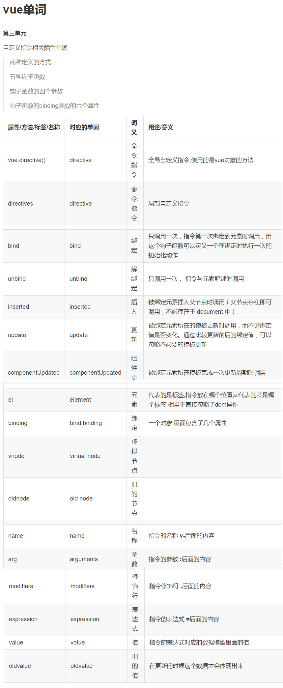

单词的重要性
1.
第一单元单词-vue入门
2.
第二单元单词-vue基础特性
3.
第三单元单词-内置指令
4.
第三单元单词-自定义指令
5.
第四单元单词-vue基础特性下
6.
第五单元单词-过滤器
7.
第六单元单词-vue深入理解
8.
第七单元单词-组件上
9.
第八单元单词-组件下
10.
第九单元单词-路由
11.
第十单元单词-vue-resource-axios
12.
第十一单元-vuex
13.
第十二单元-webpack
14.
第十三单元-es6
15.
第十四单元
16.
第十五单元
Published with GitBook
单词
